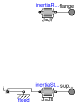
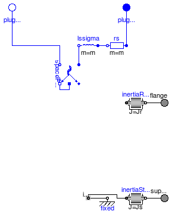

Extends from Modelica.Icons.Library2 (Icon for library where additional icon elements shall be added).
| Name | Description |
|---|---|
| Connector for Space Phasors | |
| Partial model for all machines | |
| Partial model for induction machine | |
| Partial model for DC machine |
| Type | Name | Description |
|---|---|---|
| Voltage | v_[2] | [V] |
| flow Current | i_[2] | [A] |
connector SpacePhasor "Connector for Space Phasors" Modelica.SIunits.Voltage v_[2]; flow Modelica.SIunits.Current i_[2]; end SpacePhasor;

| Type | Name | Default | Description |
|---|---|---|---|
| Inertia | Jr | rotor's moment of inertia [kg.m2] | |
| Boolean | useSupport | false | enable / disable (=fixed stator) support |
| Inertia | Js | stator's moment of inertia [kg.m2] |
| Type | Name | Description |
|---|---|---|
| Flange_a | flange | |
| Flange_a | support | support at which the reaction torque is acting |
partial model PartialBasicMachine "Partial model for all machines"
constant Modelica.SIunits.Angle pi=Modelica.Constants.pi;
parameter Modelica.SIunits.Inertia Jr "rotor's moment of inertia";
parameter Boolean useSupport=false "enable / disable (=fixed stator) support";
parameter Modelica.SIunits.Inertia Js(start=Jr) "stator's moment of inertia";
output Modelica.SIunits.Angle phiMechanical = flange.phi-internalSupport.phi
"mechanical angle of rotor against stator";
output Modelica.SIunits.AngularVelocity wMechanical(displayUnit="1/min") = der(phiMechanical)
"mechanical angular velocity of rotor against stator";
output Modelica.SIunits.Torque tauElectrical = inertiaRotor.flange_a.tau
"electromagnetic torque";
output Modelica.SIunits.Torque tauShaft = -flange.tau "shaft torque";
Modelica.Mechanics.Rotational.Interfaces.Flange_a flange;
Modelica.Mechanics.Rotational.Components.Inertia inertiaRotor(final J=Jr);
Modelica.Mechanics.Rotational.Interfaces.Flange_a support if useSupport
"support at which the reaction torque is acting";
Modelica.Mechanics.Rotational.Components.Inertia inertiaStator(final J=Js) if useSupport;
Modelica.Mechanics.Rotational.Components.Fixed fixed if (not useSupport);
protected
Mechanics.Rotational.Interfaces.Support internalSupport;
equation
connect(inertiaRotor.flange_b, flange);
connect(inertiaStator.flange_b, support);
connect(internalSupport, inertiaStator.flange_a);
connect(internalSupport, fixed.flange);
end PartialBasicMachine;

| Type | Name | Default | Description |
|---|---|---|---|
| Boolean | useSupport | false | enable / disable (=fixed stator) support |
| Inertia | Js | stator's moment of inertia [kg.m2] | |
| Integer | p | number of pole pairs (Integer) | |
| Frequency | fsNominal | nominal frequency [Hz] | |
| Nominal resistances and inductances | |||
| Resistance | Rs | warm stator resistance per phase [Ohm] | |
| Inductance | Lssigma | stator stray inductance per phase [H] | |
| Type | Name | Description |
|---|---|---|
| Flange_a | flange | |
| Flange_a | support | support at which the reaction torque is acting |
| PositivePlug | plug_sp | |
| NegativePlug | plug_sn |
partial model PartialBasicInductionMachine
"Partial model for induction machine"
extends PartialBasicMachine(Jr(start=0.29));
constant Integer m=3 "number of phases";
parameter Integer p(min=1, start=2) "number of pole pairs (Integer)";
parameter Modelica.SIunits.Frequency fsNominal(start=50) "nominal frequency";
parameter Modelica.SIunits.Resistance Rs(start=0.03)
"warm stator resistance per phase";
parameter Modelica.SIunits.Inductance Lssigma(start=3*(1 - sqrt(1 - 0.0667))/(2*pi*fsNominal))
"stator stray inductance per phase";
output Modelica.SIunits.Voltage vs[m] = plug_sp.pin.v - plug_sn.pin.v
"stator instantaneous voltages";
output Modelica.SIunits.Current is[m] = plug_sp.pin.i
"stator instantaneous currents";
output Modelica.SIunits.Current i_0_s( stateSelect=StateSelect.prefer) = spacePhasorS.zero.i
"stator zero-sequence current";
// to be defined in model that extends from this partial (since airgap isn't included here)
input Modelica.SIunits.Current idq_ss[2]
"stator space phasor current / stator fixed frame";
input Modelica.SIunits.Current idq_sr[2](each stateSelect=StateSelect.prefer)
"stator space phasor current / rotor fixed frame";
input Modelica.SIunits.Current idq_rs[2]
"rotor space phasor current / stator fixed frame";
input Modelica.SIunits.Current idq_rr[2](each stateSelect=StateSelect.prefer)
"rotor space phasor current / rotor fixed frame";
Modelica.Electrical.MultiPhase.Interfaces.PositivePlug plug_sp(final m=m);
Modelica.Electrical.MultiPhase.Interfaces.NegativePlug plug_sn(final m=m);
Modelica.Electrical.MultiPhase.Basic.Resistor rs(
final m=m,
final R=fill(Rs, m),
final T_ref=fill(293.15,m),
final alpha=zeros(m),
final useHeatPort=false,
final T=rs.T_ref);
Modelica.Electrical.MultiPhase.Basic.Inductor lssigma(final m=m, final L=fill(Lssigma, m));
SpacePhasors.Components.SpacePhasor spacePhasorS(final turnsRatio=1);
equation
connect(plug_sp, rs.plug_p);
connect(rs.plug_n, lssigma.plug_p);
connect(lssigma.plug_n, spacePhasorS.plug_p);
connect(spacePhasorS.plug_n, plug_sn);
connect(spacePhasorS.ground,spacePhasorS. zero);
end PartialBasicInductionMachine;

| Type | Name | Default | Description |
|---|---|---|---|
| Boolean | useSupport | false | enable / disable (=fixed stator) support |
| Inertia | Js | stator's moment of inertia [kg.m2] | |
| Real | turnsRatio | ratio of armature turns over number of turns of the excitation winding | |
| Nominal parameters | |||
| Voltage | VaNominal | nominal armature voltage [V] | |
| Current | IaNominal | nominal armature current [A] | |
| AngularVelocity | wNominal | nominal speed [rad/s] | |
| Nominal resistances and inductances | |||
| Resistance | Ra | warm armature resistance [Ohm] | |
| Inductance | La | armature inductance [H] | |
| Type | Name | Description |
|---|---|---|
| Flange_a | flange | |
| Flange_a | support | support at which the reaction torque is acting |
| PositivePin | pin_ap | |
| NegativePin | pin_an |
partial model PartialBasicDCMachine "Partial model for DC machine"
extends PartialBasicMachine(Jr(start=0.15));
parameter Modelica.SIunits.Voltage VaNominal(start=100)
"nominal armature voltage";
parameter Modelica.SIunits.Current IaNominal(start=100)
"nominal armature current";
parameter Modelica.SIunits.AngularVelocity wNominal(displayUnit="1/min", start=1425*2*pi/60)
"nominal speed";
parameter Modelica.SIunits.Resistance Ra(start=0.05)
"warm armature resistance";
parameter Modelica.SIunits.Inductance La(start=0.0015) "armature inductance";
parameter Real turnsRatio
"ratio of armature turns over number of turns of the excitation winding";
output Modelica.SIunits.Voltage va = pin_ap.v-pin_an.v "armature voltage";
output Modelica.SIunits.Current ia = pin_ap.i "armature current";
Modelica.Electrical.Analog.Interfaces.PositivePin pin_ap;
Modelica.Electrical.Analog.Interfaces.NegativePin pin_an;
Modelica.Electrical.Analog.Basic.Resistor ra(
final R=Ra,
final T_ref=293.15,
final alpha=0,
final useHeatPort=false,
final T=ra.T_ref);
Modelica.Electrical.Analog.Basic.Inductor la(final L=La);
equation
connect(la.p,ra. n);
connect(pin_ap,ra. p);
end PartialBasicDCMachine;